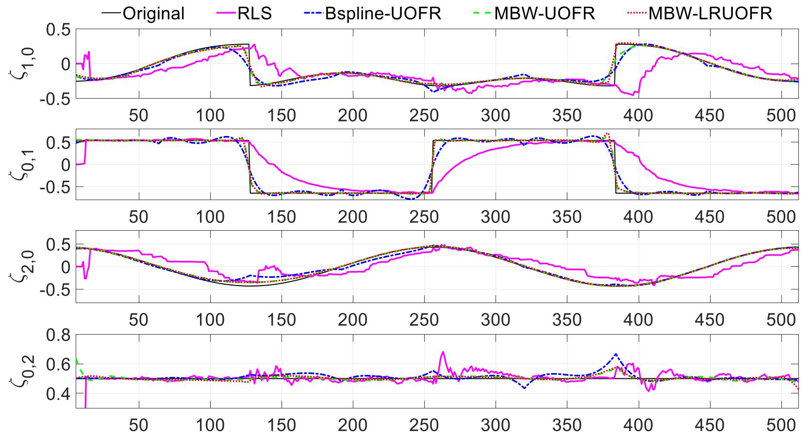

|
Jingbo Zhang
Email /
CV /
Bio /
Google Scholar /
Twitter /
Github
I am a Ph.D. Candidate supervised by Dr. Jing Liao at
the Department of Computer Science, City University of Hong Kong. I have broad research interests in computer vision,
machine learning, 3D reconstruction and optimization, neural rendering, and computational photography.
If you have any questions to discuss or are interested in collaboration, please feel free to contact me.
|
|

|
FDNeRF: Few-shot Dynamic Neural Radiance Fields for Face Reconstruction and Expression Editing
Jingbo Zhang,
Xiaoyu Li
Ziyu Wan,
Can Wang,
Jing Liao
SIGGRAPH Asia, 2022
[Project Page]
[PDF]
[Code]
[Video]
[Bibtex]
|

|
Adaptive Joint Optimization for 3D Reconstruction with Differentiable Rendering
Jingbo Zhang,
Ziyu Wan,
Jing Liao
IEEE Transactions on Visualization and Computer Graphics (TVCG), 2022
[PDF]
[Bibtex]
|
|
|
High-Fidelity Pluralistic Image Completion with Transformers
Ziyu Wan,
Jingbo Zhang,
Dongdong Chen,
Jing Liao
IEEE International Conference on Computer Vision (ICCV), 2021
[Project Page]
[PDF]
[Code]
[Bibtex]
|
|

|
A multiple beta wavelet-based locally regularized ultraorthogonal forward regression algorithm for time-varying system identification with applications to EEG
Yang Li, Jingbo Zhang, Weigang Cui, Heng Yuan, Hualiang Wei
IEEE Transactions on Instrumentation and Measurement (TIM), 2019
[PDF]
[Bibtex]
A novel parametric modeling algorithm is proposed to identify time-varying nonlinear systems based on a TV-NARX model.
|
|
Patents
-
一种基于beta小波基函数展开的时变非线性系统快速辨识方法, CN107967395A, Yang Li, Jingbo Zhang, Weigang Cui, Song Xu, Qinglei Hu
-
一种基于多小波基函数展开的锋电位时变格兰杰因果准确辨识方法, CN108509933A, Yang Li, Daxin Hao, Jingbo Zhang
|
|
{kind=link}